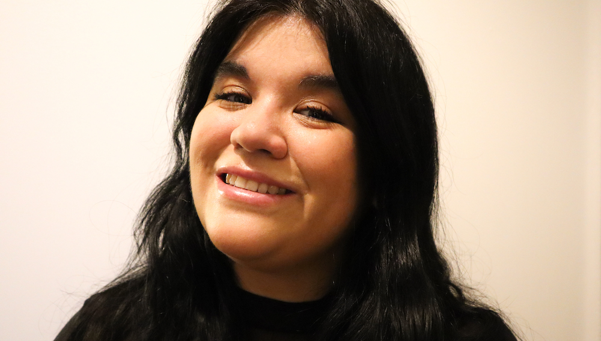

Hi, i'm Paola!
I’m an upcoming Front end developer that is based in Stockholm, Sweden.
Right now I am studying the Front end/ App developer program at Changemakers Educations.
I will be done with this program at summer -24 and after that hopefully be ready for work and a new leap.
Before all this I worked many years in restaurant business and retail, very high tempo and social work.
If you wish to contact me so please do it here
